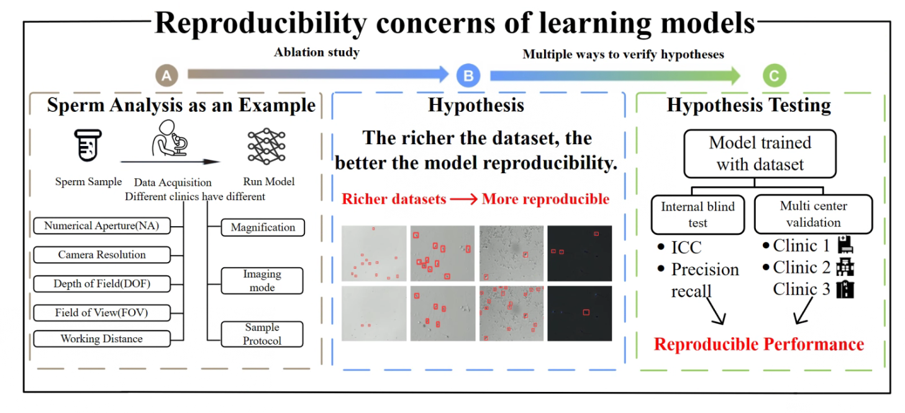

Jiaqi Wang
Now I am a full-time research assistant at the Chinese University of Hong Kong,Shenzhen(CUHKSZ), focusing on research in the direction of micro medical robotics. In the future, I would like to get more opportunities about medical robotics.
Previously, I obtained my B.S. in Mechanical Design Manufacture and Automation at XIDIAN University(XDU) in 2022, advised by Professor Pei Wang.
Please find my CV here.
Research Interest
Currently I am working on automated operations in assisted reproductive technology(IVF), such as automated finding of sperm under the microscope, automated splitting of blastocysts, etc.
In the future I would like to experiment with more deep learning algorithms with healthcare and the design of surgical robotics.
What's
New
[Dec 2022] Estimating End-Effector 3D Position using a Single Monocular Microscopic Image for Robotic Micromanipulation is accepted to ROBIO 2022!
[Nov 2022] Estimating Z-position of Motile Cells for Robotic Cell Manipulation is accepted to IEEE CBS 2022!
[Nov 2022] Machine Learning-based Depth Prediction of End-Effector for 3D Robotic Micromanipulation is accepted to IEEE CBS 2022!
[Oct 2022] I obtained the Video Presentation Award-Second Place at the American Society for Reproductive Medicine's 78th ASRM Scientific Congress & Expo!
This is the most prestigious reproductive medicine conference in the United States! And the abstracts are published in FERTILITY AND STERILITY, the top journal in reproductive medicine.
[Jun 2022] I obtained my B.S. in Mechanical Design Manufacture and Automatio at XIDIAN University(XDU).
Research
Experience
Below are my research experience and industry projects.
-

Testing The Reproducibility and Effectiveness of Deep Learning Models among Clinics: Deep Learning-Based Sperm Counting as a Pilot Study
Under review NPJ digital medicine
Jiaqi Wang, Aojun jiang, Wenyuan Chen et al. Task: Enhancing deep learning models for sperm detection and counting in in vitro fertilization (IVF) procedures.
What: Conducting a multicentric clinical validation to address the challenge of model reproducibility across varied clinical settings in IVF.
Benefits: Improved clinical outcomes and enhanced reliability in IVF procedures.
How: By examining the impact of imaging factors, enriching the training dataset with diverse imaging conditions, and ensuring a balanced representation of relevant objects, the study demonstrates the importance of dataset diversity and comprehensive feature sets for consistent model performance. This approach enhances model reproducibility and clinical reliability in IVF laboratories. -

Identifying Viability of Immotile Sperm at One Glance: Sperm Viability Classifier Powered by Deep Learning
Fertility and Sterility
Aojun Jiang, Jiaqi Wang, Huan Zhao, Zhuoran Zhang, Yu Sun Task: Developing an AI-based technique to non-invasively predict the viability of immotile sperm using a single brightfield image, without requiring sample processing..
What: Testing the hypothesis that viability information can be reflected by sperm morphology in microscopic images and developing an AI model for viability prediction.
Benefits: Non-invasive prediction of sperm viability, eliminating the need for cytotoxic reagents or tedious procedures. Enables instant viability information for infertility diagnosis and IVF treatment.
How: The AI model is built using the structure of Vision Transformer and trained on 1471 images of immotile sperm. The model predicts viability based on the brightfield image and is validated using blind tests on 10 new samples. Model performance is quantified by accuracy, recall, and specificity. The weights of the model are analyzed and visualized to understand its attention to different parts of the sperm, revealing that morphological changes related to viability primarily exist in the cell nucleus. -
Automated positioning during microscopic sperm selection
IEEE ROBIO; IEEE CBS
Jiaqi Wang, Jiaqi Chen, Chenjie Wang, Zhuoran Zhang What: Adress space management for distributed persistent memory.
Motivation: It is essential to build a distributed persistent memory allocator with high availability, high performance and crash consistency, but the existing persistent memory allocator cannot satisfy the above characteristics at the same time.
How: Use a centralized monitor to manage the node and address mapping information in the cluster. Use the raft protocol to ensure the high availability of the monitor. Use the primary backup protocol to ensure the high availability of the data. Build a thread-isolated address mapping table and batch processing strategy to improve access to metadata server performance. Use the state machine mechanism inside the local allocator, and use the two-phase commit method to ensure the atomicity of address allocation. Design a lock-free data structure for address allocation -
Automated Point-of-Care Semen Analysis Using Smartphone Imaging and Occlusion-Aware Multi-Object Tracking
Conditional accept: IEEE Transactions on Automation Science and Engineering
Aojun Jiang, Miao Hao, Yiqian Li, Jiaqi Wang et al. What: Deliver scalable performance on RC RDMA.
Motivation: RDMA suffers performance collapse when transferring data to an increasing number of clients on reliable connection because of resource contention in the CPU cache.
How: Deliver scalable performance based on RC RDMA. It achieves so by grouping and rating the network connections, so as to balance the saturation and thrashing of the cache space. Introduced a background thread pool for efficient data storage and enhanced RDMA with strategic scheduling. Constructed a QP-isolated RDMA communication method while utilizing GPUDirect for inter-node communication, reducing message copying overhead. Developed a background thread pool for parallel data persistence and improved RDMA scalability through hardware resource reuse and efficient scheduling. Achieved a write bandwidth 18\% higher than the baseline system. -
Automated Non-invasive Analysis of Motile Sperms Using Cross-scale Guidance Network
Submitted to IEEE International Conference on Robotics and Automation
Wei Dai, Zixuan Wu, Jiaqi Wang, Rui Liu, Tianyi Wu et al. What: Designed and implemented a c++ source code MysqlExecutor by imitating ScanExecutor of ClickHouse to support ByteNDB storage. Developed a presentation of the new schema and drafted a list of C++ classes that needs to be modified to support ByteNDB storage.
-

Somatosensory Wearable Mechanical Gloves
XIDIAN University May 2020 - Dec 2021
China Mechanical Innovation Design Competition
First Prize (Top 5%)What: Improving point-lookup using data block hash index. . Do some basic consistency checks to LSM-tree
Benefits: The CPU utilization of one of the main functions in the point lookup code path, DataBlockIter::Seek(), seek is reduced by 21.8% and the overall throughput is increased by 10% at an overhead of 4.6% more space. . Do some basic consistency checks to LSM-tree
You can find more details here. -
-
Digital Twin Platform for Shield Excavation
XIDIAN University Jan 2020 - Jun 2022
China International "Internet+" Innovation and
Entrepreneurship Competition Second PrizeWhat:1) 2) MongoDB-based route scalability optimization based on mongoDB, eliminating invalid routes, optimizing lock contention, and reducing access latency from 10 seconds to 0.6 milliseconds, a reduction of 2 orders of magnitude 3) In-place assign based on MongoDB chunk, reducing blast radius, improving chunk takeover failure SLA from 96% to 99.99%. You can find more details here.
-
Education & Intern
Experience
By reserved by time order
The Chinese University of HongKong, Shenzhen
2022.06 - now Advisor: Prof. Zhuoran ZhangI had great experience working with Prof. Zhuoran Zhang. Professor Zhang's rigorous research spirit and excellent research taste have deeply influenced me. I have always followed Prof Zhang's research philosophy: from the clinics, to the clinics. This experience strengthens my problem-solving and communication skills and broadens my research horizons.
XIDIAN University
2018.09-2022.06 Advisor: Prof. Pei WangI am lucky to follow WangPei who encourage me to go for professional competence. Professor Wang has led me forward in the field of Digital Twins and I have gained a lot.
Siemens Industry Software (Shanghai) Co., Ltd
2022.01 - 2022.02 PPosition: Teamcenter Product Development InternshipResponsible for the secondary development and post-checking of functions in Teamcenter for enterprise needs; Preliminary data processing: interacted with clients for feed backs and assisted technical consultants in determining functional requirements and application logic; Responsible for setting relevant functional test data, and assisting clients in application data migration.
Services
[2018 - 2022] President of the XDU Painting and Calligraphy Association. I taught the members how to make rubber stamps.Pic1
[2019 - 2019] Robomaster against Robotics team members, Here's a video of us assembling the infantry robot.
Awards
üèÜ[2023] IEEE ROBIO 2022 conference oral presentation
üèÜ[2022] Second Prize in SSE Research Poster Competition in CUHKSZ
üèÜ[2022] Video Presentation Award-Second Place at the American Society for Reproductive Medicine's 78th ASRM Scientific Congress & Expo
üèÜ[2022] Outstanding Graduate of XDU(Top 1%)
üèÜ[2022] Outstanding Student of XDU(Top 5%)
üèÜ[2022] Second Prize of National University Student Social Practice and Science Contest on Energy Saving & Emission Reduction
üèÜ[2022] Director of Innovation and Entrepreneurship Training Programme for University Students
üèÜ[2021] Honorable Mention of the International Mathematical Contest in Modeling(MCM)
üèÜ[2021] Outstanding Student of XDU(Top 5%)
üèÜ[2021] Second Prize of the Chinese Mathematical Contest in Modeling(MCM)
üèÜ[2021] First Prize of Mechanical Innovation Design Competition in Shaanxi Province(Top 1%)
üèÜ[2020] Third Prize of the 12th Shaanxi Province Industrial Engineering Improvement Creativity Competition
üèÜ[2020] China International "Internet+" University Students Innovation and Entrepreneurship Competition silver medal
üèÜ[2020] Outstanding Student of XDU(Top 5%)
üèÜ[2019] College's Best Leadership Scholarship of XDU